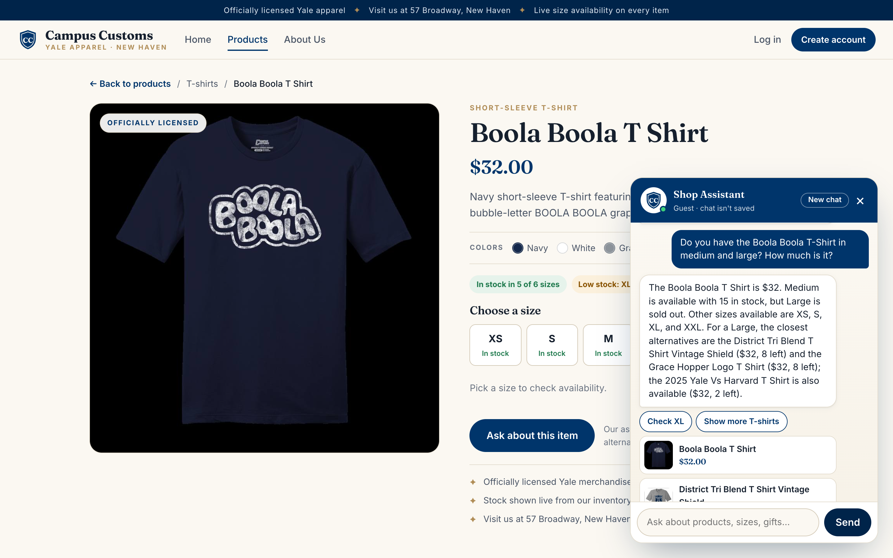
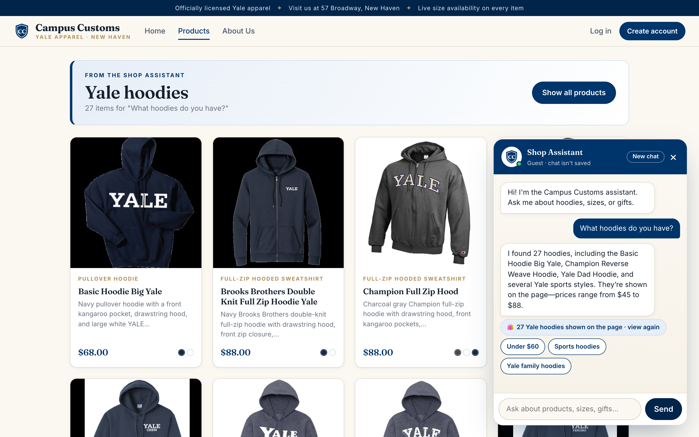
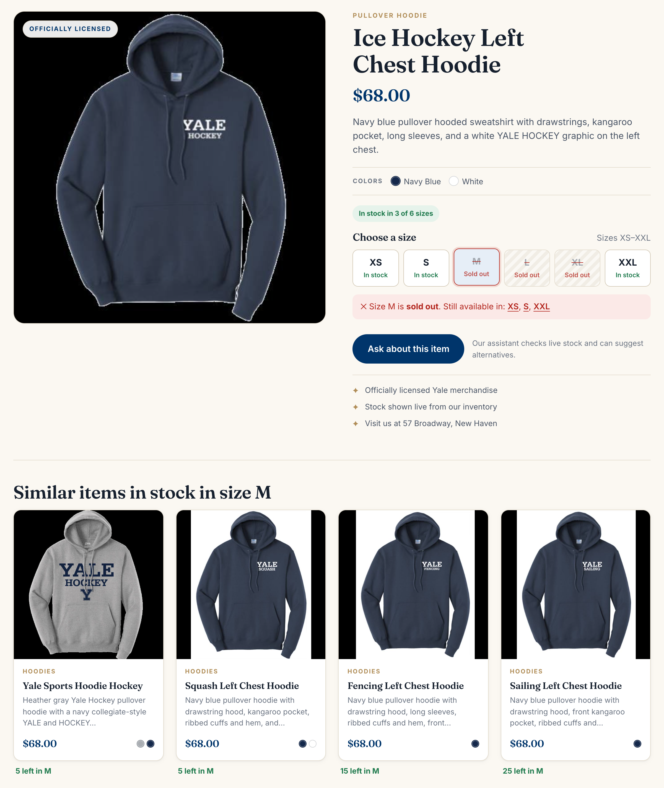

data-2/campus_customs.db (tables below each screenshot). Click any screenshot to open it full size.
Check 1
Chat checks inventory and price from the database
Asked on the Boola Boola T-Shirt page, the chatbot answered $32, 15 left in medium, large sold out, and suggested in-stock large alternatives. Every number matches the database exactly, so the bot is reading real stock rather than guessing.
Shopper: “Do you have the Boola Boola T-Shirt in medium and large? How much is it?”
Bot: “The Boola Boola T Shirt is $32. Medium is available with 15 in stock, but Large is sold out. Other sizes available are XS, S, XL, and XXL. For a Large, the closest alternatives are the District Tri Blend T Shirt Vintage Shield ($32, 8 left) and the Grace Hopper Logo T Shirt ($32, 8 left); the 2025 Yale Vs Harvard T Shirt is also available ($32, 2 left).”

| What the chatbot said | Chat answer | campus_customs.db | |
|---|---|---|---|
| Price | $32 | $32.00 | ✓ match |
| Medium (M) stock | 15 in stock | 15 | ✓ match |
| Large (L) stock | sold out | 0 | ✓ match |
| Alternatives in L | District Tri Blend Vintage Shield 8 · Grace Hopper Logo 8 · 2025 Yale Vs Harvard 2 (all $32) | 8 · 8 · 2 (all $32.00) | ✓ match |
Check 2
Category search puts product cards on the page
The chatbot updated the page dynamically: asking “What hoodies do you have?” on the Home page switched the site to the Products page, which rendered a “Yale hoodies · 27 items” banner and 27 product cards. The screenshot shows the first row; the rest are below. That count matches the bot's reply and the same 27 hoodies in the database, and each card opens its Problem 3 detail page.
Shopper: “What hoodies do you have?”
Bot: “I found 27 hoodies, including the Basic Hoodie Big Yale, Champion Reverse Weave Hoodie, Yale Dad Hoodie, and several Yale sports styles. They’re shown on the page—prices range from $45 to $88.”

| Check | On the site | Verified | |
|---|---|---|---|
| Hoodie cards on the page | 27 | 27 hoodies in the catalogue | ✓ match |
| Same products? | 27 names on the page | the same 27 names as the SQL query | ✓ match |
| Card click | “Basic Hoodie Big Yale” | opened /products/basic-hoodie-big-yale (the Problem 3 detail page) | ✓ match |
Check 3 · Problem 9 usability feature
Sold-out size feedback with in-stock alternatives
On the Ice Hockey Left Chest Hoodie, sold-out sizes are struck through. Picking M shows a clear “Size M is sold out. Still available in: XS, S, XXL” message and a “Similar items in stock in size M” row with real stock counts, so a sold-out size is no longer a dead end. Shoppers immediately see what they can buy in their size instead of leaving the page.

| Item | Page shows | campus_customs.db | |
|---|---|---|---|
| Ice Hockey Left Chest Hoodie, size M | Sold out | 0 in M | ✓ match |
| “Still available in” | XS, S, XXL | XS 20 · S 8 · XXL 25 (L, XL = 0) | ✓ match |
| Yale Sports Hoodie Hockey | 5 left in M | 5 in M, $68.00 | ✓ match |
| Squash Left Chest Hoodie | 5 left in M | 5 in M, $68.00 | ✓ match |
| Fencing Left Chest Hoodie | 15 left in M | 15 in M, $68.00 | ✓ match |
| Sailing Left Chest Hoodie | 25 left in M | 25 in M, $68.00 | ✓ match |